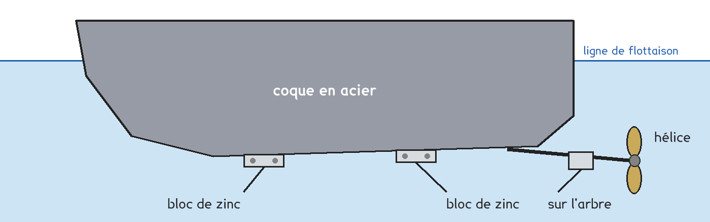
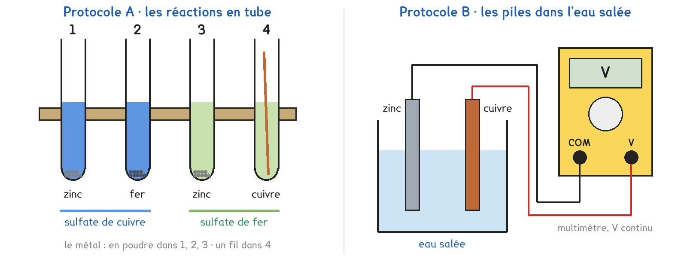

Tle Bac Pro · toutes spécialités · TP commun CT-08
Pourquoi le zinc se ronge-t-il à la place de l'acier ?
2 figures
Sujet. Au port, les bateaux sortis de l’eau pour l’hiver portent des blocs de zinc vissés sur leur coque en acier. Après un an de mer, les blocs sont rongés, l’acier est intact. On les remplace à chaque printemps.

Problématique : pourquoi le zinc se ronge-t-il à la place de l’acier ?
L’acier est surtout fait de fer. Il y a sept jours, trois clous en fer ont été plongés dans l’eau salée : l’un nu, l’autre entouré de zinc, le troisième entouré de cuivre.
a) Observer les trois clous. Entourer ce que vous voyez.
| Le clou | nu | avec du zinc | avec du cuivre |
|---|---|---|---|
| Sa rouille | aucune · peu · beaucoup | aucune · peu · beaucoup | aucune · peu · beaucoup |
| Le métal autour, rongé | sans objet | oui · non | oui · non |
Document. Un métal qui se ronge perd des électrons : il est oxydé, par exemple Fe → Fe2+ + 2 e−. Un ion qui gagne des électrons est réduit. Un métal qui cède facilement ses électrons est un bon réducteur.
b) Compléter chaque demi-équation, puis entourer ce qu’elle représente.
| La demi-équation | Entourer |
|---|---|
| Zn → Zn2+ + ……… e− | oxydation · réduction |
| Cu2+ + ……… e− → Cu | oxydation · réduction |
Deux protocoles répondent à la même question : une partie de la classe prend A, l’autre prend B, et on compare à la fin.

Protocole A · les réactions en tube. On met un métal dans une solution qui contient les ions d’un autre métal. Si un dépôt apparaît, le métal a cédé ses électrons aux ions : il est le plus réducteur des deux.
Protocole B · les piles dans l’eau salée. Deux lames de métaux différents dans l’eau salée forment une pile. Le voltmètre affiche une tension positive quand sa borne COM est reliée à la borne − de la pile, qui est le métal le plus réducteur.
c) Compléter le tableau pour comparer les deux protocoles.
| Protocole A | Protocole B | |
|---|---|---|
| Ce qu’on observe ou mesure | …………………………… | …………………………… |
| Il faut des produits chimiques | oui · non | oui · non |
| Une limite | …………………………… | …………………………… |
Le choix se fait maintenant, avant de toucher au matériel.
d) Quel protocole prenez-vous ? Justifier en une phrase.
Le professeur peut vous imposer celui qui reste disponible.
Je prends le protocole ……… parce que ……………………………………………………………………
e) Avant de mesurer, faire une hypothèse d’après les clous de la question a.
Classer les trois métaux, du plus réducteur au moins réducteur.
le plus réducteur : …………………… puis …………………… puis ……………………
Avant de commencer
Blouse, lunettes et gants pendant toute la manipulation.
Le sulfate de cuivre est nocif et dangereux pour les milieux aquatiques : tout ce qui a touché une solution va au bidon de récupération, jamais à l’évier.
Une pointe de spatule de poudre suffit : pas plus.
f) Relever vos résultats dans la ligne de votre protocole, puis conclure.
| Les deux métaux, COM puis V | zinc, cuivre | cuivre, fer | zinc, fer |
|---|---|---|---|
| A · le tube | 1 | 2 | 3 |
| A · un dépôt sur le métal | oui · non | oui · non | oui · non |
| B · la tension, avec son signe (V) | |||
| Le plus réducteur des deux | …………… | …………… | …………… |
Le tube 4 se regarde aussi : il servira à la question j.
g) Schématiser la pile zinc-cuivre et son voltmètre. Marquer ses bornes + et −.
Groupe A : trouver les bornes d’après votre ligne « le plus réducteur ».
Le schéma se dessine sur la feuille du TP.
h) Classer les trois métaux, du plus au moins réducteur.
Votre hypothèse de la question e est-elle confirmée ?
i) Comparer avec un groupe de l’autre protocole : même classement ?
Groupe B : la tension zinc-cuivre vaut-elle la somme des deux autres ?
j) Dans le tube 4, le cuivre ne change pas. Expliquer avec votre classement.
k) Écrire l’équation du tube 1 à partir des deux demi-équations de b.
Zn + Cu2+ → ……………………………………
l) Répondre à la problématique en deux phrases, avec le mot « électrons ».
Ce que ce TP a établi, et qui vaut pour tous les métaux :
À RETENIR
Une oxydation est une perte d’électrons, une réduction un gain d’électrons. Une réaction d’oxydoréduction est un transfert d’électrons du réducteur vers l’oxydant.
Du plus réducteur au moins réducteur : zinc, fer, cuivre. Un métal réagit avec les ions d’un métal moins réducteur que lui, jamais l’inverse.
Deux métaux au contact dans l’eau salée : le plus réducteur s’oxyde à la place de l’autre. C’est la protection par anode sacrificielle.
La cuve en acier d’un chauffe-eau électrique contient une tige de magnésium, qu’on contrôle tous les deux ans et qu’on remplace quand elle est usée. Entourer :
le magnésium est plus · moins réducteur que le fer.
Pourquoi la tige s’use-t-elle, et pas la cuve ?
TP commun de physique-chimie, toutes spécialités. Le travail se fait sur la feuille du TP : cette page en est la version à l'écran, sans les lignes à remplir. Rien n'est enregistré.